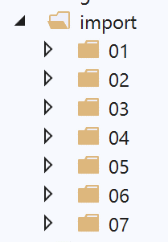
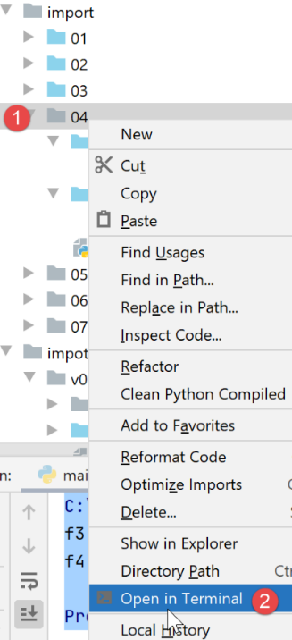
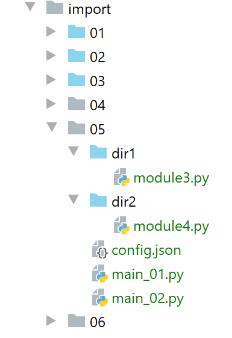

9. Les imports
L’erreur rencontrée dans la version 1 de l’exercice d’application nous amène à approfondir le rôle de l’instruction [import].

9.1. Scripts [import_01]
Le script [imported] va être importé par différents scripts (appelés aussi modules) :

# module importé
# cette instruction sera exécutée à chaque fois que le module sera importé
print("2")
# variable appartenant au module importé
x=4
Un module est exécuté lorsqu’il est importé. Ainsi lorsque le module [imported] sera importé :
- l’affichage de la ligne 3 aura lieu ;
- la variable x de la ligne 5 recevra sa valeur ;
Le script [main_01] est le suivant :
# un module importé est exécuté
import imported
# utilisation de la variable x du module importé
print(imported.x)
- ligne 2 : le module [imported] est importé. Cela va provoquer son exécution :
- la valeur 2 va être affichée ;
- la variable x est crée avec la valeur 4 ;
- ligne 4 : on utilise la variable x du module importé ;
Dans PyCharm, une erreur est signalée :
En [1], PyCharm indique qu’il ne connaît pas le module [imported]. En termes techniques, cela signifie que le dossier contenant le module [imported] n’est pas dans le Python Path de PyCharm. Le Python Path est l’ensemble des dossiers dans lesquels les modules importés sont cherchés. Pour résoudre ce problème, il suffit de déclarer [Sources root] le dossier dans lequel se trouve le module [imported], ici le dossier [import/01] :


Après cette opération, le dossier [import/01] est mis dans le Python Path de Pycharm et l’erreur disparaît :

- en [1], le dossier [01] a changé de couleur ;
- en [2-3], il n’y a plus d’erreur ;
Les résultats de l’exécution sont les suivants :
Commentaires
- la ligne 2 est le résultat de l’exécution du module importé ;
- la ligne 3 affiche la valeur de la variable x du module importé ;
On retiendra de cet exemple, le concept important qu’un module (ou un script) importé est exécuté.
Le script [main_02] est le suivant :
# on importe la variable x du module importé
from imported import x
# on l'affiche
print(x)
- ligne 2, on a une autre syntaxe de l’importation [from module import objet1, objet2, …]. Ici on importe la variable [imported.x]. Avec ectte syntaxe, la variable x devient une variable du script [main_02]. On n’a plus besoin de la préfixer par son module [imported] ;
- ligne 4 : on affiche la variable x de [main_02] ;
Les résultats de l’exécution sont les suivants :
Le script [main_03] est le suivant :
# on importe tout ce qui est visible du module importé
from imported import *
# on utilise la variable x du module importé
print(x)
La notation [import *] de la ligne 2 signifie qu’on importe tous les objets visibles du module importé (variables, fonctions).
Les résultats sont les suivants :
Le script [main_04] est le suivant :
# on importe la variable x du module importé
# et on la renomme y
from imported import x as y
# on affiche la variable y
print(y)
La ligne 3 montre qu’on peut importer un objet du module importé et lui donner un alias. Ici la variable [imported.x] devient la variable [main_04.y]. Les résultats sont les mêmes qu’auparavant.
9.2. Script [import_02]

Le module importé [module1.py] est ici le suivant :
# une fonction
def f1():
print("f1")
Le module importé définit une fonction, un cas fréquent.
Le script [main_01] est le suivant :
# import
import module1
# exécution f1
module1.f1()
- ligne 2, le module est importé. Il va être exécuté. Ici, il n’affiche rien ;
- ligne 4 : la fonction [f1] du module importé est exécutée ;
Les résultats de l’exécution sont les suivants :
Note : Pour éviter que PyCharm ne signale une erreur sur l’importation de la ligne 2, il faut mettre le dossier contenant [module1] dans les [Sources Root] de PyCharm :

En [1], le dossier [02] mis dans les [Sources Root] est passé en bleu. On notera que l’erreur signalée n’empêche pas ici une exécution correcte des scripts. En effet, lors de l’exécution du script [main_0x], le dossier du script est automatiquement mis dans le Python Path. Du coup [module1] est trouvé. Dorénavant, lorsque sur une copie d’écran un dossier est en bleu, c’est qu’il a été mis dans les [Sources Root] de PyCharm.
Le script [main_02] est le suivant :
# import
from module1 import f1
# exécution f1
f1()
- la ligne 2 importe la fonction [f1] du module [module1] ;
- ligne 4, on utilise la fonction f1 ;
Les résultats sont identiques à ceux du script [main_01].
9.3. Scripts [import_03]

Note : [03] est dans les [Sources Root] du projet.
Les nouveaux scripts vont importer le module [module2] qui n’est pas dans le même dossier qu’eux.
Le script [module2] est le suivant :
# une fonction
def f2():
print("f2")
Le script définit donc une fonction [f2].
Le script [main_01] est le suivant :
# import du module Class2
import dir1.module2
# exécution f2
dir1.module2.f2()
- ligne 2 : on utilise une notation spéciale pour indiquer comment trouver le module [module2]. Il faut lire [dir1.module2] comme le chemin [dir1/module2] : pour trouver [module2], on part du dossier du script courant [main_01], puis on passe dans [dir1] et là on trouve [module2]. Il ne faut pas oublier ici que le point de départ du chemin est le dossier du script qui importe ;
- ligne 4 : pour exécuter la fonction [f2] de [module2] ;
Les résultats sont les suivants :
Ligne 2, le résultat de la fonction [f2].
Le script [main_02] est le suivant :
# import du module dir1.module2 qu'on renomme
import dir1.module2 as module2
# exécution f2
module2.f2()
Ligne 2, on renomme le module [dir1.module] pour simplifier l’écriture de la ligne 4.
Le script [main_03] est le suivant :
# importde la fonction f2 du module dir1.module2
from dir1.module2 import f2
# exécution f2
f2()
Cette fois-ci, ligne 2, on n’importe que la fonction [f2] qui devient alors une fonction du script [main_03] (ligne 4).
Tous ces scripts fonctionnent aussi bien dans le contexte PyCharm que dans celui d’une console Python. La raison est que dans les deux cas, le dossier du script exécuté, ici le dossier [03] fait partie du Python Path. Du coup, le dossier [dir1/module2] est trouvé.
9.4. Scripts [import_04]

Ici, les dossiers [dir1] et [dir2] ont été mis dans les [Sources Root] du projet PyCharm.
Le premier module importé est [module3] :
# une fonction
def f3():
print("f3")
Le second module importé est [module4] :
from module3 import f3
# une fonction
def f4():
f3()
print("f4")
- ligne 1, on importe la fonction [f3] de [module3]. Ici, [module3] est visible parce qu’on a mis son dossier [dir1] dans les [Sources Root] ;
- lignes 4-6 : on définit une fonction [f4] qui fait appel à la fonction [f3] de [module3] ;
Le script principal [main_01] est le suivant :
# on importe module4
from module4 import f4
# exécution f4
f4()
- ligne 2, on importe le module [module4]. Celui-ci est visible car on a mis son dossier [dir2] dans les [Sources Root] de PyCharm ;
- ligne 4 : exécution de la fonction [f4] de [module4] ;
Les résultats de l’exécution de [main_01] dans PyCharm sont les suivants :
Maintenant, exécutons [main_01] dans un terminal (console) Python :

Les résultats sont les suivants :
Que s’est-il passé ? Le terminal Python n’a aucune connaissance du Python Path et des [Sources Root] de PyCharm. Il a son propre Python Path. Dans celui-ci, on a toujours le dossier du script qui s’exécute, ici le script [main_01]. Il connaît donc le dossier [import/04]. Dans le script exécuté, il trouve la ligne :
from module4 import f4
L’interpréteur Python cherche [module4] dans les dossiers de son Python Path. Or [module4] ne se trouve pas dans [import/04] qui se trouve bien dans le Python Path mais dans [import/04/dir2] qui ne s’y trouve pas. D’où l’erreur.
On a donc un problème déjà rencontré : un script s’exécutant correctement dans PyCharm peut planter dans le contexte d’un terminal Python. C’est un problème récurrent qu’il va nous falloir résoudre.
9.5. Scripts [import_05]

Note : les dossiers [dir1] et [dir2] sont mis dans le Python Path. Remarquons déjà qu’il y a là un conflit : [module3] et [module4] seront trouvés à deux endroits du Python Path de PyCharm :
- dans [import/04/dir1] et [import/05/dir1] pour [module3] ;
- dans [import/04/dir2] et [import/05/dir2] pour [module4] ;
On peut alors sortir [import/04/dir1] et [import/04/dir2] des [Sources Root] du projet PyCharm. Il se trouve qu’ici, [import/05/dir1] est une copie de [import/04/dir1] (idem pour [dir2]) et qu’il n’y a donc pas de problème. Mais notons néanmoins qu’à l’intérieur même de PyCharm, on doit faire attention à la liste des dossiers des [Sources Root] afin d’éviter les conflits.
Le script [main_01] devient le suivant :
import sys
# on modifie le sys.path pour y inclure les dossiers
# contenant les classes à importer
sys.path.append(".")
sys.path.append("./dir1")
sys.path.append("./dir2")
# on importe module4
from module4 import f4
# exécution f4
f4()
On cherche à résoudre le problème du Python Path. On en veut un qui fonctionne aussi bien sous PyCharm que dans un terminal Python. Pour cela, on va le fixer nous-mêmes.
- lignes 4-6 : on ajoute les dossiers [., ./dir1, ./dir2] dans le Python Path. Pour que cela marche, il faut que le dossier courant au moment de l’exécution soit le dossier [import/05]. Ce sera vrai dans PyCharm mais pas forcément vrai dans un terminal Python comme nous le verrons ;
- ligne 8 : on importe [module4]. Suite à ce que nous venons de faire, il devrait être trouvé dans [./dir2] ;
L’exécution dans PyCharm donne les résultats suivants :
Maintenant, dans un terminal Python :
(venv) C:\Data\st-2020\dev\python\cours-2020\python3-flask-2020\import\05>python main_01.py
f3
f4
Ligne 1, le dossier d’exécution est [import/05].
Maintenant remontons d’un niveau dans l’arborescence de [import/05] :
(venv) C:\Data\st-2020\dev\python\cours-2020\python3-flask-2020\import\05>cd ..
(venv) C:\Data\st-2020\dev\python\cours-2020\python3-flask-2020\import>python 05/main_01.py
Traceback (most recent call last):
File "05/main_01.py", line 8, in <module>
from module4 import f4
ModuleNotFoundError: No module named 'module4'
- ligne 2, lorsque [main_01] est exécuté on n’est plus dans le dossier [import/05] mais dans [import]. Or nous avons écrit :
sys.path.append(".")
sys.path.append("./dir1")
sys.path.append("./dir2")
Cela ajoute au Python Path les dossiers [import, import/dir1, import/dir2], pas du tout ce qu’on veut. Notons qu’ajouter au Python Path des dossiers qui n’existent pas (import/dir1, import/dir2) ne provoque pas d’erreurs.
On a progressé mais ce n’est pas suffisant. Il faut ajouter au Python Path, non pas des chemins relatifs, mais des chemins absolus.
Le script [main_02] est une variante de [main_01] qui utilise un fichier de configuration [config.json] :
{
"dependencies": [
"C:/Data/st-2020/dev/python/cours-2020/python3-flask-2020/import/05/dir1",
"C:/Data/st-2020/dev/python/cours-2020/python3-flask-2020/import/05/dir2"
]
}
La valeur de la clé [dependencies] est la liste des dossiers à ajouter au Python Path. A noter qu’ici on a mis des noms absolus et non des noms relatifs.
Le script [main_02] utilise le fichier [config.json] de la façon suivante :
import codecs
import json
import sys
# fichier de configuration
config_filename="C:/Data/st-2020/dev/python/cours-2020/python3-flask-2020/import/05/config.json"
# lecture du fichier de configuration json
with codecs.open(config_filename, "r", "utf-8") as file:
config = json.load(file)
# modification du sys.path
for directory in config['dependencies']:
sys.path.append(directory)
# on importe module4
from module4 import f4
# exécution f4
f4()
- ligne 6 : notez qu’on a utilisé le nom absolu du fichier de configuration ;
- lignes 8-9 : le fichier de configuration est lu. Un dictionnaire [config] (ligne 9) est construit avec son contenu ;
- lignes 11-13 : on ajoute les éléments du tableau [config['dependencies']] au Python Path. Notons que puisqu’on a mis des noms absolus de dossiers dans [config.json], on ajoute dans le Python Path des noms absolus ;
- ligne 16 : [module4] est importé. On devrait le trouver puisque maintenant [dir2] est dans le Python Path ;
L’exécution donne les mêmes résultats que pour [main_02] sauf que le script continue à fonctionner lorsque le dossier d’exécution n’est plus [import/05] :
(venv) C:\Data\st-2020\dev\python\cours-2020\python3-flask-2020\import>python 05/main_02.py
f3
f4
Ligne 1, le dossier d’exécution est [import].
Nous avons progressé. Nous avons vu :
- qu’il nous fallait construire le Python Path nous-mêmes ;
- qu’il fallait y mettre les noms absolus de tous les dossiers contenant les modules importés par l’application ;
Néanmoins, mettre des noms absolus dans des scripts n’est pas une solution. Dès que le projet est transporté sur un autre site, il ne marche plus. Il nous faut trouver autre chose.
9.6. Scripts [import_06]

Note : les dossiers [06, dir1, dir2] ont été placés dans les [Sources Root] du projet PyCharm. Les dossiers [dir1, dir2] sont identiques à ceux des exemples précédents.
Le fichier [config.json] est le suivant :
{
"rootDir": "C:/Data/st-2020/dev/python/cours-2020/v-02/imports/06",
"relativeDependencies": [
"dir1",
"dir2"
],
"absoluteDependencies": [
]
}
Nous introduisons deux types de chemins :
- des chemins absolus, lignes 7-8 ;
- des chemins relatifs, lignes 3-6. Ils sont relatifs à la racine de la ligne 2. Ainsi lorsque le projet bouge d’emplacement, seule cette ligne doit être modifiée ;
Le script [utils.py] exploite le fichier [config.json] et construit le Python Path :
# imports
import codecs
import json
import os
import sys
# configuration de l'application
def config_app(config_filename: str) -> dict:
# config_filename : nom du fichier de configuration
# on laisse remonter les exceptions
# exploitation du fichier de configuration
with codecs.open(config_filename, "r", "utf-8") as file:
config = json.load(file)
# ajout des dépendances au sys.path
rootDir = config['rootDir']
# on ajoute les dépendances relatives du projet au syspath
for directory in config['relativeDependencies']:
# on ajoute la dépendance au début du syspath
sys.path.insert(0, f"{rootDir}/{directory}")
# on lui ajoute les dépendances absolues du projet au syspath
for directory in config['absoluteDependencies']:
# on ajoute la dépendance au début du syspath
sys.path.insert(0, directory)
# on rend le dictionnaire de la configuration
return config
# dossier du sript exécuté
def get_scriptdir():
return os.path.dirname(os.path.abspath(__file__))
- ligne 8 : la fonction [config_app] reçoit en paramètre le nom du fichier de configuration ;
- lignes 12-14 : le fichier de configuration est exploité pour créer le dictionnaire [config] ;
- ligne 20 : [sys.path] est la liste des dossiers du Python Path ;
- lignes 17-20 : les dépendances relatives du fichier de configuration sont ajoutées au Python Path. Elles sont ajoutées au début du tableau [sys.path], ligne 20. En effet, lorsque Python cherche un module il explore les dossiers du [sys.path] dans l’ordre. Or dans ce document, des modules de mêmes noms vont se trouver dans des dossiers différents du [sys.path]. En mettant les dépendances de l’application au début du tableau [sys.path], on s’assure que celles-ci seront explorées avant d’autres dossiers du [sys.path] qui pourraient contenir des modules de mêmes noms ;
- lignes 21-24 : les dépendances absolues du fichier de configuration sont ajoutées au Python Path ;
- ligne 26 : on rend la configuration de l’application ;
- lignes 29-30 : la fonction [get_scriptdir] rend le nom absolu du dossier du script en cours d’exécution (celui où se trouve l’appel à la fonction) ;
Le script principal [main] est le suivant :
# imports
import sys
from utils import config_app
def affiche_path(msg: str):
# message
print(f"{msg}------------------------------")
# sys.path
for path in sys.path:
print(path)
# main -------------
try:
# le sys.path est configuré
affiche_path("avant....")
config = config_app(f"{get_scriptdir()}/config.json")
affiche_path("après....")
# on importe module4
from module4 import f4
# exécution f4
f4()
except BaseException as erreur:
print(f"L'erreur suivante s'est produite : {erreur}")
finally:
print("done")
- ligne 4 : la fonction [config_app] est importée. On notera que puisque [utils] et [main] sont dans le même dossier, cet [import] fonctionne tout le temps. En effet, le dossier du script principal est automatiquement ajouté au python Path ;
- lignes 7-12 : la fonction [affiche_path] affiche la liste des dossiers du Python Path ;
- ligne 19 : on configure l’application. Noter qu’on passe à la fonction [config_app] le nom absolu du fichier de configuration. Après cette instruction, le Python Path a été reconstruit ;
- ligne 22 : on importe [module4]. Grâce à la reconstruction du Python Path, ce module va être trouvé ;
- ligne 24 : on exécute la fonction [f4] ;
Dans le contexte PyCharm, les résultats de l’exécution sont les suivants :
C:\Data\st-2020\dev\python\cours-2020\python3-flask-2020\venv\Scripts\python.exe C:/Data/st-2020/dev/python/cours-2020/python3-flask-2020/import/06/main.py
avant....------------------------------
C:\Data\st-2020\dev\python\cours-2020\python3-flask-2020\import\06
C:\Data\st-2020\dev\python\cours-2020\python3-flask-2020
C:\Data\st-2020\dev\python\cours-2020\python3-flask-2020\fonctions\shared
C:\Data\st-2020\dev\python\cours-2020\python3-flask-2020\impots\v01\shared
…
C:\Program Files\Python38\python38.zip
C:\Program Files\Python38\DLLs
C:\Program Files\Python38\lib
C:\Program Files\Python38
C:\Data\st-2020\dev\python\cours-2020\python3-flask-2020\venv
C:\Data\st-2020\dev\python\cours-2020\python3-flask-2020\venv\lib\site-packages
après....------------------------------
C:/Data/st-2020/dev/python/cours-2020/v-02/imports/06/dir2
C:/Data/st-2020/dev/python/cours-2020/v-02/imports/06/dir1
C:\Data\st-2020\dev\python\cours-2020\python3-flask-2020\import\06
C:\Data\st-2020\dev\python\cours-2020\python3-flask-2020
C:\Data\st-2020\dev\python\cours-2020\python3-flask-2020\fonctions\shared
C:\Data\st-2020\dev\python\cours-2020\python3-flask-2020\impots\v01\shared
….
C:\Program Files\Python38\python38.zip
C:\Program Files\Python38\DLLs
C:\Program Files\Python38\lib
C:\Program Files\Python38
C:\Data\st-2020\dev\python\cours-2020\python3-flask-2020\venv
C:\Data\st-2020\dev\python\cours-2020\python3-flask-2020\venv\lib\site-packages
f3
f4
done
Process finished with exit code 0
Commentaires
- lignes 2-13 : le Python Path de PyCharm. On y retrouve tous les dossiers mis dans les [Sources Root] du projet ;
- lignes 14-29 : le Python Path construit par la fonction [config_app]. On y trouve aux lignes 15-16, les deux dépendances que nous avons ajoutées ;
- lignes 22-27 : les dossiers système de l’interpréteur Python qui a exécuté le script ;
- lignes 28-29 : l’exécution se passe normalement ;
Maintenant, plaçons-nous dans le contexte qui jusqu’à maintenant provoquait une erreur d’exécution :
- on se place dans un terminal Python ;
- on se met dans un dossier autre que celui contenant le script exécuté ;
(venv) C:\Data\st-2020\dev\python\cours-2020\python3-flask-2020\import>python 06/main.py
avant....------------------------------
C:\Data\st-2020\dev\python\cours-2020\python3-flask-2020\import\06
C:\Program Files\Python38\python38.zip
C:\Program Files\Python38\DLLs
C:\Program Files\Python38\lib
C:\Program Files\Python38
C:\Data\st-2020\dev\python\cours-2020\python3-flask-2020\venv
C:\Data\st-2020\dev\python\cours-2020\python3-flask-2020\venv\lib\site-packages
après....------------------------------
C:/Data/st-2020/dev/python/cours-2020/v-02/imports/06/dir2
C:/Data/st-2020/dev/python/cours-2020/v-02/imports/06/dir1
C:\Data\st-2020\dev\python\cours-2020\python3-flask-2020\import\06
C:\Program Files\Python38\python38.zip
C:\Program Files\Python38\DLLs
C:\Program Files\Python38\lib
C:\Program Files\Python38
C:\Data\st-2020\dev\python\cours-2020\python3-flask-2020\venv
C:\Data\st-2020\dev\python\cours-2020\python3-flask-2020\venv\lib\site-packages
f3
f4
done
Cette fois-ci c’est bon (lignes 20-21). On notera que le [sys.path] ne contient pas les mêmes dossiers que lorsque l’exécution se passe sous PyCharm.
9.7. Scripts [import_07]
Nous améliorons la solution précédente de deux façons :
- nous remplaçons le fichier de configuration [config.json] par un script [config.py]. En effet, le fichier jSON pose un problème important : il ne peut pas être commenté. Le dictionnaire [config.json] peut être remplacé par un dictionnaire Python qui a l’avantage de pouvoir être commenté ;
- nous utilisons un module visible de tous les projets Python de la machine ;
9.7.1. Installation d’un module de portée machine

Ci-dessus, nous créons un dossier [packages/myutils] dans le projet PyCharm (les noms n’importent pas).
Le script [myutils.py] est le suivant :
# imports
import sys
import os
def set_syspath(absolute_dependencies: list):
# absolute_dependencies : une liste de noms absolus de dossiers
# on ajoute au syspath les dépendances absolues du projet
for directory in absolute_dependencies:
# on vérifie l'existence du dossier
existe = os.path.exists(directory) and os.path.isdir(directory)
if not existe:
# on lève une exception
raise BaseException(f"[set_syspath] le dossier du Python Path [{directory}] n'existe pas")
else:
# on joute le dossier au début du syspath
sys.path.insert(0, directory)
- lignes 6-18 : la fonction [set_syspath] crée un Python Path avec la liste des dossiers qu’on lui transmet en paramètre ;
- lignes 12-15 : on vérifie que le dossier à mettre dans le Python Path existe ;
Le script [__init.py__] (deux soulignés devant et derrière le nom. Celui-ci est imposé) est le suivant :
from .myutils import set_syspath
On importe la fonction [set_syspath] du script [myutils]. La notation [.myutils] désigne le chemin [./myutils], donc le script [myutils] se trouvant dans le même dossier que [__init.py]. On aurait pu utiliser la notation [myutils]. Seulement, nous allons créer un module [myutils] de portée machine. Si bien que la notation [from myutils import set_syspath] deviendrait alors ambigüe. S’agit-il d’importer le script [myutils] du dossier courant ou le script [myutils] de portée machine ? La notation [.myutils] lève cette ambiguïté.
Le script [setup.py] (là également le nom est imposé) est le suivant :
from setuptools import setup
setup(name='myutils',
version='0.1',
description='Utilitaire fixant le Python Path',
url='#',
author='st',
author_email='st@gmail.com',
license='MIT',
packages=['myutils'],
zip_safe=False)
Dans ce script, on décrit le module qu’on va créer. Ici, nous allons le créer localement. Mais le même processus est utilisé pour créer un module distribué officiellement (cf. |pypi|). Les points importants sont ici les suivants :
- ligne 3 : le nom du module créé ;
- ligne 4 : la version du module ;
- ligne 5 : sa description ;
- lignes 7-8 : l’auteur du module ;
Pour installer ce module avec une portée machine, on procède de la façon suivante :

Puis dans le terminal Python, on tape la commande suivante [pip install .] :
(venv) C:\Data\st-2020\dev\python\cours-2020\python3-flask-2020\packages>pip install .
Processing c:\data\st-2020\dev\python\cours-2020\python3-flask-2020\packages
Using legacy setup.py install for myutils, since package 'wheel' is not installed.
Installing collected packages: myutils
Attempting uninstall: myutils
Found existing installation: myutils 0.1
Uninstalling myutils-0.1:
Successfully uninstalled myutils-0.1
Running setup.py install for myutils ... done
Successfully installed myutils-0.1
A partir de maintenant, tout script de la machine peut importer le module [myutils] sans que celui-ci soit dans les codes du projet.
9.7.2. Le script [config.py]

Le script [config.py] assure la configuration de l’application :
def configure():
import os
# nom absolu du dossier du script de configuration
script_dir = os.path.dirname(os.path.abspath(__file__))
# chemins absolus des dossiers à mettre dans le syspath
absolute_dependencies = [
# dossiers locaux
f"{script_dir}/dir1",
f"{script_dir}/dir2",
]
# mise à jour du syspath
from myutils import set_syspath
set_syspath(absolute_dependencies)
# on retourne la config
return {}
- ligne 1 : la fonction [configure] assure la configuration de l’application ;
- lignes 7-10 : le dictionnaire qui était auparavant dans [config.json] ;
- lignes 9-10 : parce qu’on est dans un script, on peut avoir directement les noms absolus des dossiers [dir1, dir2] ;
- lignes 12-14 : on utilise la fonction [set_syspath] du module [myutils] que nous venons de créer pour définir le Python Path de la configuration ;
- ligne 20 : on rend le dictionnaire de la configuration de l’application. Ici, il est vide ;
9.7.3. Le script [main.py]
Le script principal [main] est le suivant :
# on configure l'application
import config
config = config.configure()
# le syspath est configuré - on peut faire les imports
from module4 import f4
# main -------------
try:
f4()
except BaseException as erreur:
print(f"L'erreur suivante s'est produite : {erreur}")
finally:
print("done")
- lignes 2-4 : on configure l’application à l’aide du module [config.py]. Celui-ci est accessible car il est dans le même dossier que le script principal. Or le dossier du script principal fait toujours partie du Python Path ;
- lorsqu’on arrive à la ligne 6, le Python Path a été construit avec dedans le dossier du module [module4]. On peut donc importer celui-ci ligne 7 ;
- lignes 10-15 : il ne reste plus qu’à exécuter la fonction [f4] ;
Les résultats de l’exécution dans PyCharm sont les suivants :
Dans un terminal Python et ailleurs que dans le dossier du script principal, les résultats sont les suivants :
Désormais nous procèderons toujours de la même façon pour configurer une application :
- présence d’un script [config.py] dans le dossier du script principal. Ce script contient une fonction [configure] qui a deux objectifs :
- construire le Python Path pour l’application. Pour cela, [config.py] déclare tous les dossiers contenant les modules utilisés par l’application et construit le Python Path avec leurs noms absolus ;
- construire le dictionnaire [config] de la configuration de l’application ;
Nous appliquons ce schéma à la seconde version de l’exercice d’application. On se souvient en effet que la version 1 fonctionnait dans l’environnement PyCharm mais pas dans un terminal Python. Le problème venait du Python Path.